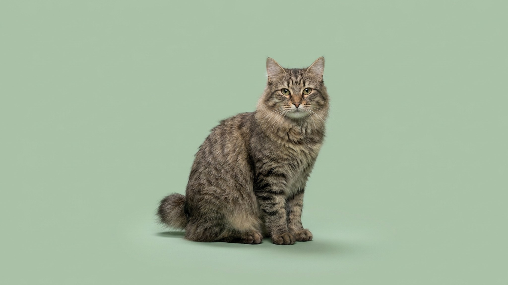

Приглядитесь к японской фигурке кота с поднятой лапой — манэки-нэко «на удачу» рисовали именно с японского бобтейла. У этой кошки не найти двух одинаковых хвостов-помпонов, а ведёт она себя скорее как активная маленькая собака, чем как диванный кот. Рассказываем про историю породы, её характер и уход.
🐾 Питомец ведёт себя странно?
AnimaLife расшифрует поведение кошки и собаки и подскажет, что делать. Попробуйте бесплатно прямо в мессенджере.
Японский бобтейл — древняя естественная порода, известная в Японии больше тысячи лет. Именно её образ лёг в основу манэки-нэко — фигурки кота с поднятой лапой, которую ставят «на удачу» в домах и магазинах. Особенно ценился трёхцветный окрас ми-кэ (белый с рыжими и чёрными пятнами) — его считали приносящим счастье.
Главная примета породы — короткий хвост-помпон длиной несколько сантиметров. Он образован естественными изгибами позвонков и у каждой кошки уникален по форме: второго точно такого не бывает. Это природная особенность породы, а не травма и не результат купирования.
Бобтейл — активный, любопытный и очень общительный кот, который привязывается ко всей семье и вникает в любые домашние дела. Скучать в одиночестве он не любит — ему нужны игры и внимание каждый день.
Бобтейлы бывают коротко- и полудлинношёрстными, но шерсть у обоих почти не сваливается: достаточно вычёсывания раз в неделю, чаще — в линьку. Хвост-помпон — естественная особенность, он не причиняет кошке дискомфорта и не требует специального ухода.
Порода считается крепкой и подвижной, без «фирменных» породных слабостей. Забота о ней — стандартная для любой кошки: плановые осмотры, профилактика паразитов, чистая вода и контроль веса, а рацион и его объём стоит обсудить с ветеринаром.
Это кошка для тех, кто хочет живого, контактного питомца-компаньона, а не украшение дивана. Японский бобтейл отлично впишется в активную семью с детьми и другими животными и понравится даже тем, кто раньше держал только собак. Единственное, чего он по-настоящему не любит, — подолгу оставаться в одиночестве и без дела.
🐾 Здоровье питомца под контролем
AI-ветеринар, дневник здоровья и персональные советы для вашего питомца — установите AnimaLife бесплатно.
🐾 Понравился разбор?
Подпишитесь на канал — каждый день разбираем по одному тревожному симптому у кошек и собак: что в пределах нормы, а когда пора к врачу. Подпишитесь, чтобы не пропустить разбор, который может спасти здоровье вашего питомца.
Материал носит информационный характер и не заменяет очную консультацию ветеринара.